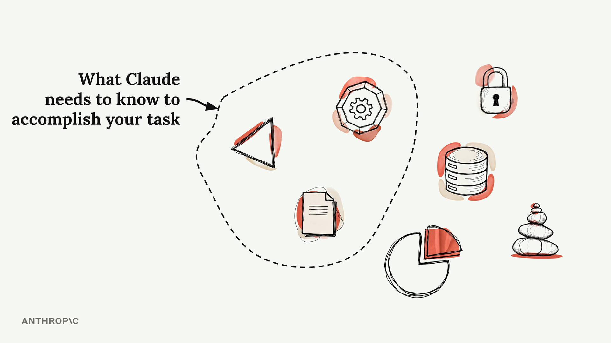
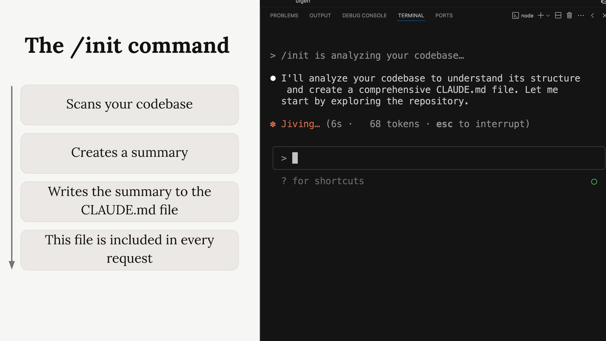
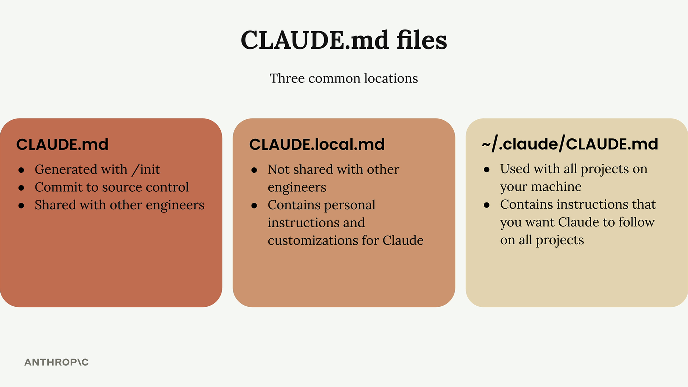

컨텍스트 추가하기
Claude와 함께 코딩 프로젝트를 진행할 때 컨텍스트 관리는 매우 중요합니다. 프로젝트에는 수십 또는 수백 개의 파일이 있을 수 있지만, Claude가 효과적으로 도움을 주려면 적절한 정보만 있으면 됩니다. 관련 없는 컨텍스트가 너무 많으면 오히려 Claude의 성능이 저하되므로, 관련 파일과 문서를 안내하는 방법을 익히는 것이 중요합니다.

/init 명령어
새 프로젝트에서 Claude를 처음 시작할 때 /init 명령어를 실행하세요. 이 명령어는 Claude에게 전체 코드베이스를 분석하고 다음을 파악하도록 지시합니다:
- 프로젝트의 목적과 아키텍처
- 중요한 명령어와 핵심 파일
- 코딩 패턴과 구조

코드 분석이 완료되면 Claude는 요약본을 작성하여 CLAUDE.md 파일에 저장합니다. Claude가 이 파일을 생성하기 위해 권한을 요청할 때, Enter를 눌러 각 쓰기 작업을 개별 승인하거나, Shift+Tab을 눌러 세션 전체에서 Claude가 자유롭게 파일을 작성하도록 허용할 수 있습니다.
CLAUDE.md 파일
CLAUDE.md 파일은 두 가지 주요 목적을 수행합니다:
- 중요한 명령어, 아키텍처, 코딩 스타일을 안내하며 Claude가 코드베이스를 탐색할 수 있도록 도움
- Claude에게 특정 또는 맞춤형 지침을 제공할 수 있음
이 파일은 Claude에게 보내는 모든 요청에 포함되므로, 프로젝트를 위한 지속적인 시스템 프롬프트 역할을 합니다.
CLAUDE.md 파일 위치
Claude는 세 가지 일반적인 위치에서 서로 다른 CLAUDE.md 파일을 인식합니다:

- CLAUDE.md - /init으로 생성되며, 소스 컨트롤에 커밋되어 다른 개발자들과 공유됨
- CLAUDE.local.md - 다른 개발자들과 공유되지 않으며, Claude에 대한 개인 지침 및 맞춤 설정을 포함
- ~/.claude/CLAUDE.md - 머신의 모든 프로젝트에 적용되며, 모든 프로젝트에서 Claude가 따르길 원하는 지침을 포함
맞춤 지침 추가하기
CLAUDE.md 파일에 지침을 추가하여 Claude의 동작을 맞춤 설정할 수 있습니다. 예를 들어, Claude가 코드에 주석을 너무 많이 추가한다면 파일을 업데이트하여 이를 조정할 수 있습니다.
# 명령어를 사용하여 "메모리 모드"로 진입하면 CLAUDE.md 파일을 지능적으로 편집할 수 있습니다. 다음과 같이 입력하면 됩니다:
# Use comments sparingly. Only comment complex code.
Claude가 이 지침을 CLAUDE.md 파일에 자동으로 병합합니다.
'@'를 사용한 파일 언급
Claude가 특정 파일을 살펴보길 원할 때 @ 기호 뒤에 파일 경로를 입력하세요. 그러면 해당 파일의 내용이 Claude에 대한 요청에 자동으로 포함됩니다.
예를 들어, 인증 시스템에 대해 질문하고 관련 파일을 알고 있다면 다음과 같이 입력할 수 있습니다:
How does the auth system work? @authClaude가 선택할 수 있는 인증 관련 파일 목록을 보여준 다음, 선택한 파일을 대화에 포함시킵니다.
CLAUDE.md에서 파일 참조하기
동일한 @ 문법을 사용하여 CLAUDE.md 파일에 직접 파일을 언급할 수도 있습니다. 이는 프로젝트의 여러 측면과 관련된 파일에 특히 유용합니다.
예를 들어, 데이터 구조를 정의하는 데이터베이스 스키마 파일이 있다면 CLAUDE.md에 다음과 같이 추가할 수 있습니다:
The database schema is defined in the @prisma/schema.prisma file. Reference it anytime you need to understand the structure of data stored in the database.이 방법으로 파일을 언급하면 해당 내용이 모든 요청에 자동으로 포함되므로, Claude는 매번 스키마 파일을 검색하고 읽지 않아도 데이터 구조에 관한 질문에 즉시 답변할 수 있습니다.